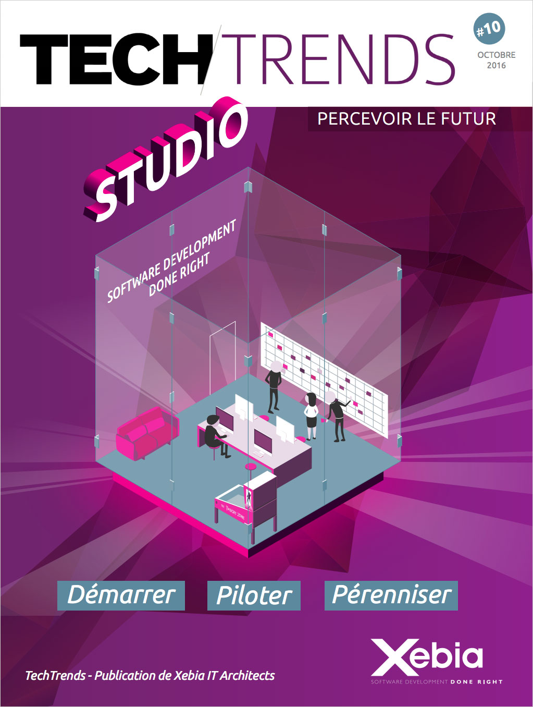

Agile development done right!
Notre métier, développer des applications de grande qualité : vos applications
Découvrez notre livre blanc
Besoin de délivrer votre projet rapidement ?

Nous aidons les entreprises à garder une longueur d'avance.
Notre agilité, notre expérience et notre connaissance des solutions de PaaS (Platform as a Service) nous permettent de démarrer votre projet en moins d'une journée.
Nous délivrons en production en continu : en quelques semaines une première version de l'application est délivrée en production et disponible pour vos utilisateurs.
L'innovation est au cœur de votre projet ?

Applications mobiles, facebook, e-commerce, web services, applications à très haute montée en charge : votre projet est porteur d'innovation.
Nous mettons notre expérience des technologies de pointe au service de ces nouveaux usages. À notre actif, plusieurs projets en production faisant appel à HTML5 mais aussi au Cloud et à Big Data.
Pour vous la qualité n'est pas négociable ?

Vous avez l'habitude de ramasser des pelletées de bugs à la fin de vos projets, et la qualité vous coûte toujours plus cher. Vos prestataires gonflent leur devis de réalisation lorsqu'ils rajoutent des tests.
Nous ne pouvons concevoir le développement d'un logiciel sans qualité car nous voulons être fiers des applications que nous produisons, c'est dans notre ADN.
Vous cherchez un partenaire qui ne cache pas les problèmes ?
La relation avec votre prestataire passe par votre service juridique et contentieux.
Le meilleur moyen d'avancer sur un projet est de se dire les choses. Nous sommes transparents et humbles. Nous vous indiquerons lorsque les choses ne sont pas à votre avantage.
Il n'y a pas de coût caché, nous sommes plus un partenaire qu'un simple prestataire.
Technologies
Nous avons une expertise reconnue dans l'écosystème Java.
Nous maîtrisons un grand nombre de technologies Web, Mobile, Cloud et Data. Nous les avons déjà éprouvées dans nos projets.
Nous utilisons des techniques de développement issues de l'eXtreme Programming qui font appel à notre longue expérience de développement.
En savoir plus >Équipe
Nous constituons des équipes dédiées à la réalisation de votre produit.
Elles sont composées d'ingénieurs et de Proxy Product Owner de Xebia expérimentés dont les compétences sont complémentaires.
L'équipe accueille volontiers des développeurs ou architectes de vos équipes pour des projets en co-développement.
En savoir plus >Culture
Nous sommes passionnés par le développement de logiciel, nous avons une culture d'excellence mélangée de geek-attitude que nous cultivons avec soin.
Nous sommes des agilistes convaincus et pratiquons Scrum/Kanban et les meilleures pratiques d'XP depuis de nombreuses années.
Nous cherchons à nous améliorer en permanence pour devenir de véritables « Craftsmen ».
En savoir plus >Techtrends Studio
Fort de notre expérience chez Xebia Studio, nous sommes convaincus que les recettes exposées dans ce livre blanc sont transposables dans un environnement où la direction métier (donneur d'ordres) et la direction informatique (réalisation) appartiennent à la même entreprise.
Les TechTrends sont l'expression de notre savoir-faire ; forgé sur le terrain, auprès de nos clients dans le cadre des projets que nous menons avec eux.
Télécharger : le livre blanc Studio - TechTrends Studio au format PDF
au format EPUB : iOs
ou
Android
Pour demander une version papier, envoyez un mail à marketing@xebia.fr